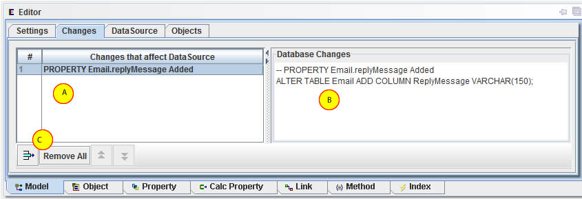

Creating a new Model
To create a new OA Model, choose "New Model" from the "File" menu, or click the new button on the toolbar.
This will open a new model window in the OABuilder desktop area.
A: project name - this the brand/name that you will using for the finished software product.
B: root directory - where project files will be generated.
C: Java package - also referred to as "namespace". The accepted format is a reverse domain reference.
For example, "com.acme.ops".
D: How objects will be displayed.
E: Scaling
F: Allow highlight and color colding.
G: Flags to determine which objects and references are displayed.

A: area that shows individual changes.
B: displays the database DDL script that will update the database.
C: options to clear out the changes once the database has been updated.

A: JDBC settings for Database. To setup a new database, see section
"Working with Databases".
B: Database naming rules - by default, the table and column names will be the same
as the those used in the model. These rules can override that.
The last option is a button that will allow the existing DB names to be changed to
match the settings that have been checked.